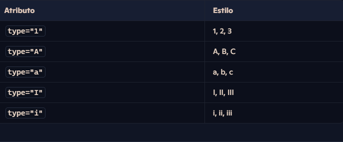
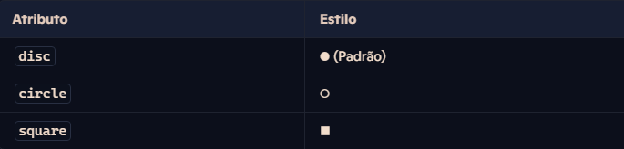

Parte geral da estrutura HTML
- h1,h2,h3,h4,h5,h6 = São usados nos níveis de títulos do texto
- p = Ultilizado para criar paragrafos
- hr = Usado para criar uma linha horizontal
- br = Usado para quebrar linhas
- lorem = Gerador de conversa fiada
- &#x = Tag para emotes
- ® = exemplo de tag para símbolos, esse é o da marca registrada
- img = carregar imagens
- link favicon = favicon do site
- address = destacar endereços, se eu abrir o site pelo celular ele redireciona pro maps
- pre = faz o texto ser lido da forma que foi escrito no código
Formatação de textos
- Negrito/destaque: strong
- Itálico/ênfase: em
- mark: marcar texto
- style=background color: mudar a cor da marcação
- big: texto grande
- small: texto pequeno
del:texto excluído- ins: texto inserido
- sup: sobrescrito (acima)
- sub: subscrito (abaixo)
code:fonte mono expaçada (ótima para ler códigos)- pre = faz o texto ser lido da forma que foi escrito no código
- shift + tab = retira os espaços antes do código
q:
entre aspas (citação)- blockquote: citações completas e longas
- blockquote cite: = coloco o endereço da citação
- abbr: para abreviações
Listas
O HTML possui três tipos principais de listas para estruturar informações:
Listas Ordenadas (ol):
A tag ol cria uma lista ordenada, onde os itens seguem uma sequência numérica ou alfabética.
Tag li → Define cada item dentro da lista.
Atributos:
type → Define o estilo da numeração (1, A, a, I, i). start → Define o número inicial da contagem.
Exemplo:
<ol type="A" start="3"> <!-- Começa no item 'C' -->
<li>Primeiro item</li>
<li>Segundo item</li>
<li>Terceiro item</li>
</ol>
Tabela dos tipos de numeração:
Listas não ordenadas (ul)
A tag ul cria uma lista sem ordem específica, ideal para agrupar itens sem hierarquia.
Tag li → Define cada item dentro da lista.
Atributos:
list-style-type → Define o estilo dos marcadores (disc, circle, square).
Exemplo:
- Item A
- Item B
- Item C
Código usado:
<ul style="list-style-type: square;">
<li>Item A</li>
<li>Item B</li>
<li>Item C</li>
</ul>
Tipos de marcadores disponíveis:
Listas de Definição (dl)
A tag dl é usada para criar uma lista de definições, ideal para apresentar termos e suas descrições.
Tag dt → Define o termo a ser descrito.
Tag dd → Define a descrição do termo.
Exemplo:
- HTML
- Linguagem de marcação usada para estruturar páginas web.
- CSS
- Usado para estilizar elementos HTML.
Código usado:
<dl>
<dt>HTML</dt>
<dd>Linguagem de marcação usada para estruturar páginas web.</dd>
<dt>CSS</dt>
<dd>Usado para estilizar elementos HTML.</dd>
</dl>
Links externos e internos
Definição de Links em HTML:
Os links em HTML são elementos que permitem que você navegue de uma página para outra ou para um recurso na web, como uma imagem, um vídeo ou um arquivo de download. Em HTML, usamos a tag a (de "anchor", que significa âncora) para criar links.
Atributos Comuns de Links:
href: O destino do link. Pode ser um URL externo, um caminho relativo para outra página no site, ou até um endereço de e-mail.
<a href="https://www.google.com">Ir para o Google</a> (link para um site externo)
<a href="pagina2.html">Página 2</a> (link para uma página dentro do site)
<a href="mailto:contato@exemplo.com">Enviar e-mail</a> (link para enviar um email)
target: Especifica onde o destino será aberto. Os valores mais comuns são:
- _self (padrão): Abre o link na mesma janela ou aba
- _blank: Abre o link em uma nova janela ou aba.
- _parent: Abre o link no quadro pai (caso esteja em um iframe).
- _top: Abre o link na janela inteira, cancelando qualquer estrutura de quadro.
- title: Adiciona uma dica que aparece quando o usuário passa o mouse sobre o link.
- rel: Usado para definir o relacionamento entre o documento atual e o link. Por exemplo.
- rel="noopener noreferrer" é recomendado para links que abrem em uma nova aba
Links em Listas e Navegação:
Links são frequentemente usados em menus de navegação, que podem ser estruturados com listas não ordenadas.
<ul>
<li><a href="home.html">Home</a></li>
<li><a href="sobre.html">Sobre</a></li>
<li><a href="contato.html">Contato</a></li>
</ul>
Considerações sobre Acessibilidade:
-Sempre forneça um texto claro e descritivo no link para melhorar a acessibilidade.
-O uso de atributos como title pode ajudar, mas não deve ser usado como única descrição
-Links de navegação importantes, como "Voltar" ou "Próximo", devem ser suficientemente informativos.
Conclusão:
Links em HTML são fundamentais para a navegação na web, permitindo que você conecte diferentes páginas, arquivos e recursos. Através de atributos como href, target, rel e outros, você pode controlar o comportamento e a funcionalidade dos links, além de garantir uma boa experiência de usuário e acessibilidade.